Última actualización: 2021-02-24
Análisis de los atletas mejor pagados del mundo
En el siguiente hacklab, haremos un análisis de los atletas mejor pagados del mundo entre 1990 y 2020. El análisis nos arroja datos interesantes.
- Tiger Woods domina la lista de los mejores clasificados recientemente mientras que antes lo era Michael Jordan.
- EE. UU. domina el mundo en lo que respecta a las ganancias.
- Monica Seles es la única mujer que figura en la lista de los 10 deportistas mejor pagados entre 1990 y 2020.
- Los 3 principales ganadores en 2020 son jugadores de fútbol.
- Los jugadores de baloncesto son los que más ganan, seguidos de Boxeo y Golf.
Acerca de lo que vas a construir
En este hacklab, vamos a desarrollar un script en Python con la ayuda de Google Colaboratory para analizar los datos y luego usamos Plotly y Matplotlib para mejorar la visualización y obtener mejores aprendizajes sobre el dataset.

Acerca de lo que aprenderás
- Cómo limpiar un dataset para su análisis
- Cómo utilizar Pandas y Matplotlib para analizar datos desde entidades visuales.
- Cómo utilizar Plotly para sacarle mayor ventaja a los datos.
Este codelab está enfocado en Análisis de datos con Python, los conceptos que no sean relevantes se pasan por alto y se proporcionan para que simplemente se copie y pegue el código.
Acerca de lo que necesitas
- Una versión reciente de Google Chrome o un navegador moderno.
- Una cuenta de correo de Gmail, para poder utilizar Google Colaboratory.
- Una cuenta de Github, para publicar tu resultados con más personas y posibles empleadores.
Descargando el código fuente
El código fuente de este ejercicio se ha tomado desde Kaggle, sin embargo una copia local está guardada en nuestra carpeta oficial en Google Drive. Puedes descargar el repositorio y el dataset usando el siguiente botón:
Importando y configurando nuestras dependencias
Lo primero que haremos antes de manipular el dataset, es declarar las dependencias de nuestro proyecto de la siguiente manera:
/who-earned-the-most-in-sports-2020.ipynb
import numpy as np
import pandas as pd
from datetime import datetime
import matplotlib.pyplot as plt
%matplotlib inline
import seaborn as sns
sns.set()
from plotly.offline import init_notebook_mode, iplot
import plotly.graph_objs as go
import plotly.offline as py
import pycountry
import folium
from folium import plugins
import numpy as np
from PIL import Image
import matplotlib.ticker as ticker
import matplotlib.animation as animation
from IPython.display import HTML
# Graphics in retina format
%config InlineBackend.figure_format = 'retina'
# Increase the default plot size and set the color scheme
plt.rcParams['figure.figsize'] = 8, 5
# Disable warnings in Anaconda
import warnings
warnings.filterwarnings('ignore')
import osUna vez que hemos importado y configurado dependencias como Matplotlib o Numpy, es momento de leer el dataset usando Pandas de la siguiente manera:
/who-earned-the-most-in-sports-2020.ipynb
df = pd.read_csv('/forbes-highest-paid-athletes-19902019/Forbes Richest Atheletes (Forbes Richest Athletes 1990-2020).csv')
df.head()
Después vamos a convertir la columna "Year" a un tipo de datos comprensible por Python como datetime.
/who-earned-the-most-in-sports-2020.ipynb
# Creating a copy of the original dataframe- df
df1 = df.copy()
df1.drop('S.NO',axis=1,inplace=True)
df1.info()
La última instrucción, df1.info() nos imprime la siguiente información:
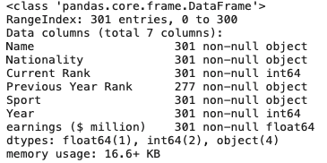
Finalmente debemos convertir el texto en la columna "Sport" en mayúsculas o minúsculas.
/who-earned-the-most-in-sports-2020.ipynb
# Convert string to datetime64
df1['Year'] = df1['Year'].apply(pd.to_datetime,format='%Y')
#Set Date column as the index column.
df1['year'] = pd.DatetimeIndex(df1['Year']).year
df1.set_index('year', inplace=True)
df1.drop('Year',axis=1,inplace=True)
# Converting the sport column to uppercase
df1['Sport'] = df1['Sport'].str.upper()
df1.head()
# df is the original dataframe while df1 is a copy where the Date has been set as an index column
Luego de estas técnicas simples de pre-procesamiento, estamos listas/os para hacer filtros, colapsar columnas o agruparlas como veremos en la siguiente sección.
Lo primero que haremos será crear el código para preguntar por los atletas mejores pagados del último año disponible, es decir, del 2020. Para eso usamos lo siguiente:
/who-earned-the-most-in-sports-2020.ipynb
data_2020 = df1[df1.index == 2020]
trace = go.Bar(
x = data_2020["earnings ($ million)"],
y = data_2020['Name'] ,
orientation='h',
marker = dict(color='pink',
line=dict(color='black',width=1)),
)
data = [trace]
layout = go.Layout(barmode = "group",title="World's Highest-Paid Athletes in 2020",width=800, height=500,
#xaxis= dict(title='No of times ranked higest'),
yaxis=dict(autorange="reversed"),
showlegend=False)
fig = go.Figure(data = data, layout = layout)
iplot(fig)
Como lo podemos observar en la pieza de código, estamos utilizando la instancia de plotly.graph_objs para configurar la gráfica de barras, sus características y los datos que vamos a imprimir.
La gráfica que nos arroja Plotly se puede ver de la siguiente manera:
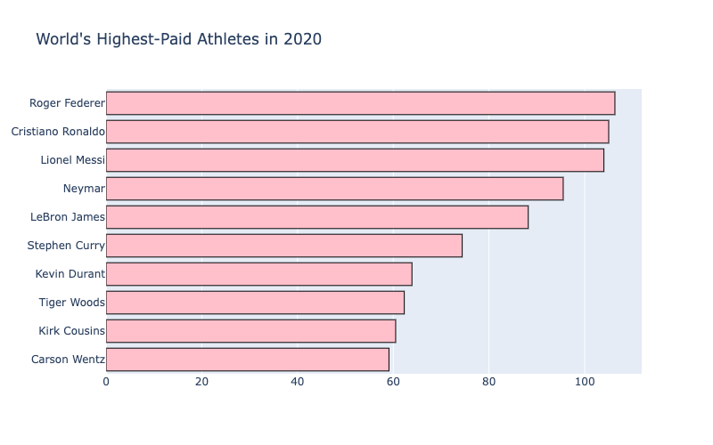
Podemos usar una de las características de configuración de Pandas, el método background_gradient para imprimir el resultado de una consulta en nuestro dataset como se puede ver en la siguiente pieza de código:
/who-earned-the-most-in-sports-2020.ipynb
# Top Paid Athlete for Each Year
Top_paid_each_year = df1[df1['Current Rank'] == 1].sort_values(by='year',ascending=False)
z = Top_paid_each_year[['Name','Sport','Nationality','earnings ($ million)']]
z.style.background_gradient(cmap='Reds')
Pandas nos permite visualizar esta instrucción así:
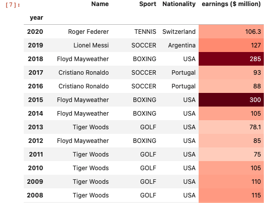
Atletas con mayor ingreso y máximo número de apariciones en la lista Forbes
/who-earned-the-most-in-sports-2020.ipynb
counts_top = Top_paid_each_year['Name'].value_counts().to_frame()
trace = go.Bar(
y = counts_top.index,
x = counts_top['Name'] ,
orientation='h',
marker = dict(color='pink',
line=dict(color='black',width=1)),
)
data = [trace]
layout = go.Layout(barmode = "group",title='Athlete earning the most,maximum number of times',width=800, height=500,
xaxis= dict(title='No of times ranked higest'),
yaxis=dict(autorange="reversed"),
showlegend=False)
fig = go.Figure(data = data, layout = layout)
iplot(fig)
Y su correspondiente gráfica, utilizando los superpoderes de Plotly:
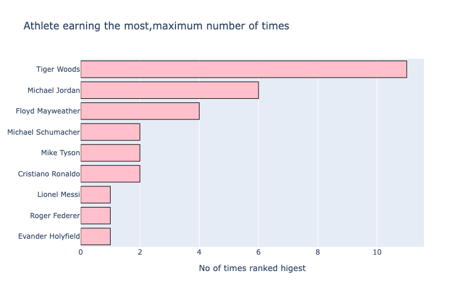
Podemos producir gráficas más sofisticadas utilizando las siguientes piezas de código:
/who-earned-the-most-in-sports-2020.ipynb
# Top Paid Athlete for Each Year
total_earnings = Top_paid_each_year.groupby('Name')['earnings ($ million)'].sum().to_frame().reset_index()
top_ranks = Top_paid_each_year['Name'].value_counts().to_frame().reset_index()
top_ranks.rename(columns={'index':'Name',
'Name':'Rank_counts'}, inplace=True)
df_compare = total_earnings.merge(top_ranks, on='Name')
/who-earned-the-most-in-sports-2020.ipynb
#source: https://www.kaggle.com/kanncaa1/plotly-tutorial-for-beginners#Bar-Charts
import plotly.graph_objs as go
from plotly import tools
trace0 = go.Bar(
y=df_compare['Name'],
x=df_compare['Rank_counts'],
marker=dict(color='rgba(171, 50, 96, 0.6)',line=dict(color='rgba(171, 50, 96, 1.0)',width=1)),
name='Top Ranks',
orientation='h',
)
trace1 = go.Scatter(
y=df_compare['Name'],
x=df_compare['earnings ($ million)'],
mode='lines+markers',
line=dict(color='rgb(63, 72, 204)'),
name='income',
)
layout = dict(
title='Income and Top Ranks',
yaxis=dict(showticklabels=True,domain=[0, 0.85]),
yaxis2=dict(showline=True,showticklabels=False,linecolor='rgba(102, 102, 102, 0.8)',linewidth=2,domain=[0, 0.85]),
xaxis=dict(zeroline=False,showline=False,showticklabels=True,showgrid=True,domain=[0, 0.42]),
xaxis2=dict(zeroline=False,showline=False,showticklabels=False,showgrid=True,domain=[0.47, 1],side='top',dtick=25),
legend=dict(x=0.029,y=1.038,font=dict(size=10) ),
margin=dict(l=200, r=20,t=70,b=70),
paper_bgcolor='rgb(248, 248, 255)',
plot_bgcolor='rgb(248, 248, 255)',
)
annotations = []
y_s = df_compare['Rank_counts']
y_nw = np.rint(df_compare['earnings ($ million)'])
# Adding labels
for ydn, yd, xd in zip(y_nw, y_s, df_compare['Name']):
# labeling the scatter savings
annotations.append(dict(xref='x2', yref='y2', y=xd, x=ydn-1,text='{:,}'.format(ydn),font=dict(family='Arial', size=12,color='rgb(63, 72, 204)'),showarrow=False))
# labeling the bar net worth
annotations.append(dict(xref='x1', yref='y1', y=xd, x=yd+1,text=str(yd),font=dict(family='Arial', size=12,color='rgb(171, 50, 96)'),showarrow=False))
layout['annotations'] = annotations
# Creating two subplots
fig = tools.make_subplots(rows=1, cols=2, specs=[[{}, {}]], shared_xaxes=True,
shared_yaxes=False, vertical_spacing=0.001)
fig.append_trace(trace0, 1, 1)
fig.append_trace(trace1, 1, 2)
fig['layout'].update(layout)
fig.show()
Produciendo las siguientes figuras:
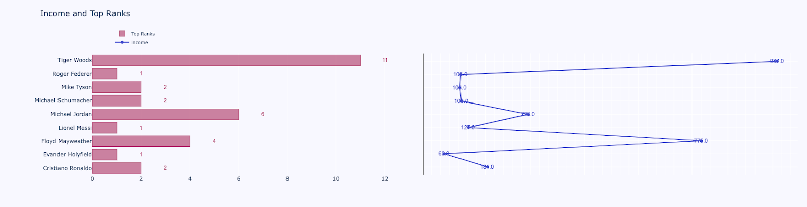
Pais que produce los máximos generadores de ingreso en deporte.
/who-earned-the-most-in-sports-2020.ipynb
counts_top = Top_paid_each_year['Nationality'].value_counts().to_frame()
trace = go.Bar(
x = counts_top.index,
y = counts_top['Nationality'] ,
orientation='v',
marker = dict(color='pink',
line=dict(color='black',width=1)),
)
data = [trace]
layout = go.Layout(barmode = "group",title='Country which produces the maximum earners in Sports',width=800, height=500,
xaxis= dict(title='No of times ranked higest'),
#yaxis=dict(autorange="reversed"),
showlegend=False)
fig = go.Figure(data = data, layout = layout)
iplot(fig)
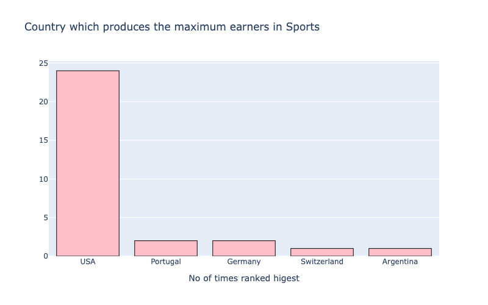
¿Cuánto ingresan los mejores atletas cada año?
/who-earned-the-most-in-sports-2020.ipynb
trace = go.Scatter(
x = Top_paid_each_year.index,
y = Top_paid_each_year['earnings ($ million)'] ,
orientation='v',
marker = dict(color='red',
line=dict(color='royalblue',width=2)),
)
data = [trace]
layout = go.Layout(title='How much did the Top Paid Athlete for Each Year, earn? ',width=800, height=500,
xaxis= dict(title='Years'),
yaxis=dict(title="Earning in US Dollars(million)"),
showlegend=False)
fig = go.Figure(data = data, layout = layout)
iplot(fig)
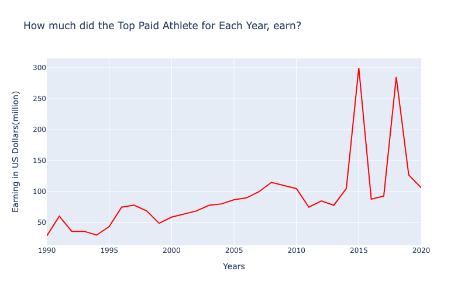
¿Cuánto ingresan los mejores atletas cada año?
/who-earned-the-most-in-sports-2020.ipynb
df['Sport'] = df['Sport'].str.upper() # Converting the text to uppercase
max_sport = df['Sport'].value_counts().to_frame()
trace = go.Bar(
y = max_sport.index,
x = max_sport['Sport'] ,
orientation='h',
marker = dict(color='pink',
line=dict(color='black',width=1)),
)
data = [trace]
layout = go.Layout(barmode = "group",title='Sport which dominates in earnings',width=800, height=500,
xaxis= dict(title='No of times ranked highest'),
yaxis=dict(autorange="reversed"),
showlegend=False)
fig = go.Figure(data = data, layout = layout)
iplot(fig)
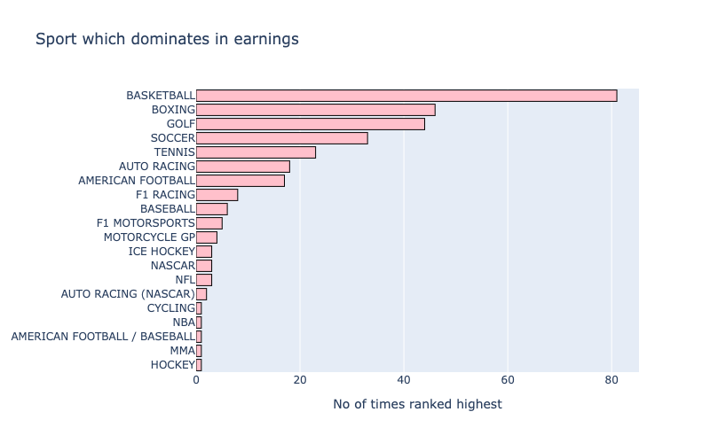
Pais que más ingresos tiene en deportes
/who-earned-the-most-in-sports-2020.ipynb
max_sport = df['Nationality'].value_counts().to_frame()
trace = go.Bar(
y = max_sport.index,
x = max_sport['Nationality'] ,
orientation='h',
marker = dict(color='pink',
line=dict(color='black',width=1)),
)
data = [trace]
layout = go.Layout(barmode = "group",title='Country which dominates in Sports earningss',width=800, height=500,
xaxis= dict(title='No of times ranked highest'),
yaxis=dict(autorange="reversed"),
showlegend=False)
fig = go.Figure(data = data, layout = layout)
iplot(fig)
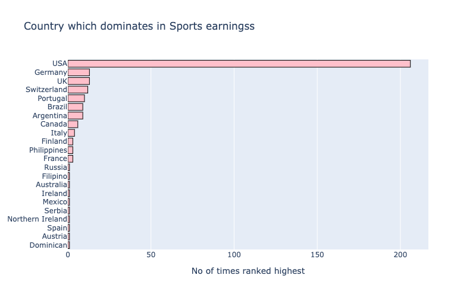
Atletas que aparecen más frecuentemente en la lista
/who-earned-the-most-in-sports-2020.ipynb
s = df['Name'].value_counts().to_frame()[:5]
s.style.background_gradient(cmap='Reds')
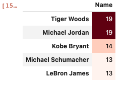
Monica Seles es la única mujer que ha aparecido en la lista de los deportistas 10 mejores pagados hasta ahora, y lo hizo en 1992.
/who-earned-the-most-in-sports-2020.ipynb
# People who have appeared once on the list.
names = df['Name'].value_counts().to_frame()
names[names['Name']==1].index
# On scanning the list, we find the name of a sole women athlete- monica seles
monica = df[df['Name'] == 'Monica Seles']
monica.style.set_properties(**{'background-color': 'pink',
'color': 'black',
'border-color': 'black'})
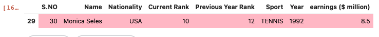
/who-earned-the-most-in-sports-2020.ipynb
top_earners_alltime = pd.pivot_table(df, index='Name',values="earnings ($ million)", aggfunc='sum')
top3_earners_all = top_earners_alltime.sort_values(by="earnings ($ million)",ascending=False)[:3]
top3_earners_all.style.background_gradient(cmap='Reds')
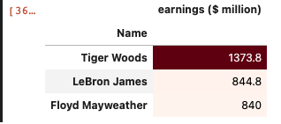
Analizando los ingresos de Tiger Woods a lo largo de los años
Vamos a crear un método para únicamente pasarle parámetros y hacer más eficiente la escritura y lectura del código, acá vemos la definición del método earnings_plot.
/who-earned-the-most-in-sports-2020.ipynb
def earnings_plot(dataframe,athlete,image_path,opacity):
"""
function that creates a plotly line chart with image of the athlete in the background
"""
athlete_df = df1[df1['Name'] == athlete]
trace = go.Scatter(
x = athlete_df.index,
y = athlete_df['earnings ($ million)'] ,
orientation='v',
marker = dict(color='red',
line=dict(color='red',width=6)),
)
data = [trace]
layout= go.Layout(title= f'{athlete}' +"'s earnings over the Years",
xaxis=dict(title='Year'),
yaxis=dict(title="Earnings in US$ (millions)"),
images= [dict(
source=Image.open(image_path),
xref= "paper",
yref= "paper",
x= 0.5,
y= 0.5,
sizex= 1,
sizey= 1,
sizing= "stretch",
opacity= opacity,
xanchor= "center",
yanchor="middle",
layer= "below")])
fig = go.Figure(data = data, layout = layout)
iplot(fig)
/who-earned-the-most-in-sports-2020.ipynb
image_path = "/kaggle/input/profile-pics/tiger_woods.jpeg"
earnings_plot(df1,'Tiger Woods',image_path,opacity=0.3)
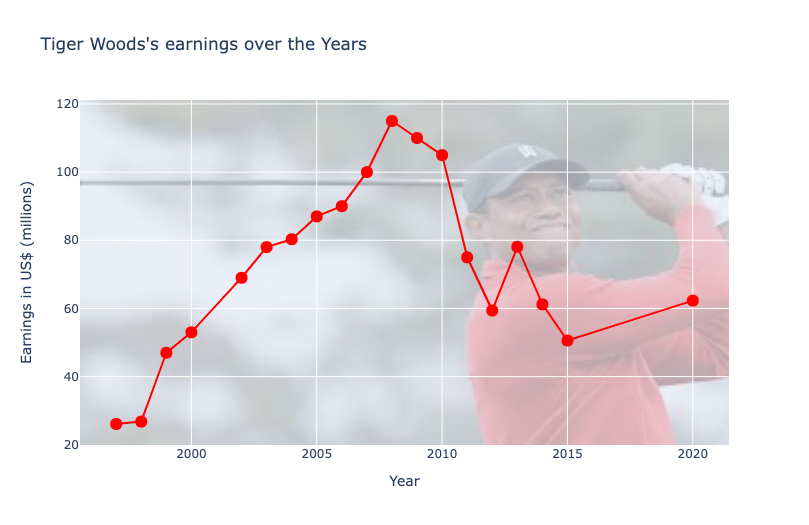
Analizando los ingresos de Floyd Mayweather a lo largo de los años
/who-earned-the-most-in-sports-2020.ipynb
image_path = "/kaggle/input/profile-pics/Floyd.jpeg"
earnings_plot(df1,'Floyd Mayweather',image_path,opacity=0.2)
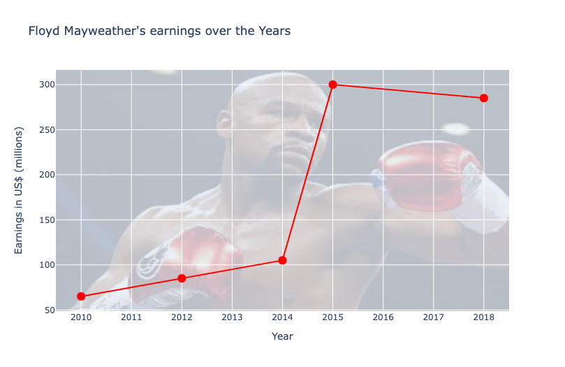
Analizando los ingresos de Lebron James a lo largo de los años
/who-earned-the-most-in-sports-2020.ipynb
image_path = "/kaggle/input/profile-pics/LeBron.jpeg"
earnings_plot(df1,'LeBron James',image_path,opacity=0.2)
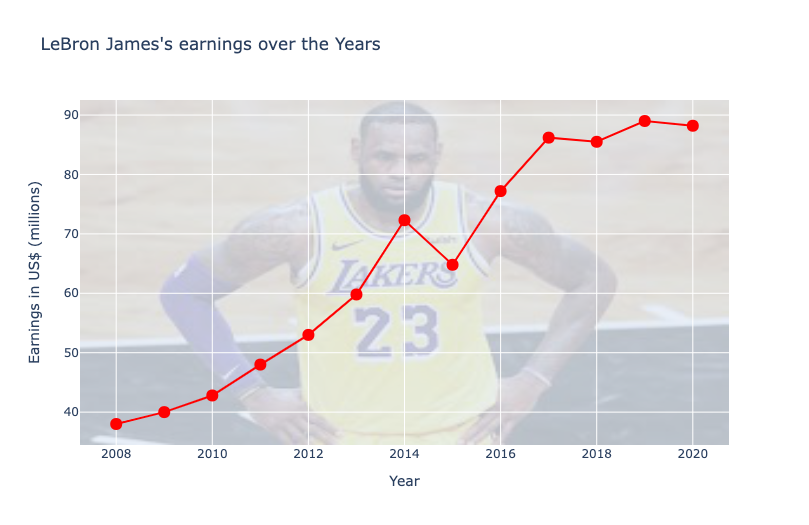
- Deportistas cuyo ranking ha subido al menos dos lugares entre 2010 y 2020.
- Atleta con el menor número de apariciones y mayores ganancias.
- Deporte y país con mayor número de atletas no rankeados que entraron en la lista de atletas mejor pagados.
- País con mayor número de deportes con atletas en el dataset.
- ¿Cuántos atletas por deporte tiene cada país?
- Ganancia mínima y máxima (dentro del dataset) por deporte y por país.
- Atleta con mayores ganancias por deporte por década
- Ganancia total por cada deporte por cada año.
- Crea un tablero en Power BI que represente los aspectos más importantes del dataset, a tu gusto, en power BI.
¡Felicitaciones! Has exitosamente construido tu primer análisis de datos utilizando Python.
Aprendiste algunas técnicas estadísticas para colapsar, filtrar y agrupar distintas propiedades del dataset para responder preguntas relevantes, aprendimos a utilizar Matplotlib y Plotly.
Ahora conoces los pasos más significativos para analizar cualquier dataset que se te ponga en frente.
Siguientes pasos
Puedes ver algunos otros recursos que hemos encontrado para ti acá: